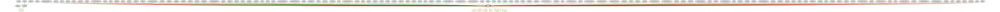

Connect to upstream components
This notebook shows a new functionality of the tool to connect the input gene list. Instead of looking for a path, as the default connecting strategy of the tool, this functionality aims to find those upstream regulators that regulate as many of the input genes.
[1]:
%%time
from neko.core.network import Network
from neko._visual.visualize_network import NetworkVisualizer
from neko.inputs import Universe
from neko._annotations.gene_ontology import Ontology
import omnipath as op
CPU times: user 3.51 s, sys: 912 ms, total: 4.42 s
Wall time: 4.32 s
1. Import CollecTRI interactions from Omnipath
[2]:
collectri = op.interactions.CollecTRI.get()
[3]:
resources = Universe()
resources.add_resources(collectri, name = 'collectri')
resources.build()
2. Define the nodes of interest and create network object with CollecTRI interactions
[4]:
genes = ["SRC", "NOTCH1", "CDH1", "CDH2", "VIM", "LATS1", "LATS2"]
[5]:
new_net1 = Network(genes, resources = resources.interactions)
3. Connect nodes to upstream regulators
The connect_to_upstream_nodes looks for the regulators of each of the input nodes, and ranks each of the regulators based on the number of the input nodes they regulate.
The rank argument refers to the number of the ranked regulators that should be included in the network The depth argument refers to how many steps away from the input nodes the algorithm should go. The higher the number the more regulatory layers will be included in the final network.
[6]:
%%time
new_net1.connect_to_upstream_nodes(rank = 1, depth=2)
Warning: Some target genes are not present in the DataFrame and will be ignored: {'O96006'}
CPU times: user 1.15 s, sys: 6.1 ms, total: 1.16 s
Wall time: 1.16 s
[7]:
visualizer = NetworkVisualizer(new_net1, color_by='effect', noi=True)
visualizer.render()
